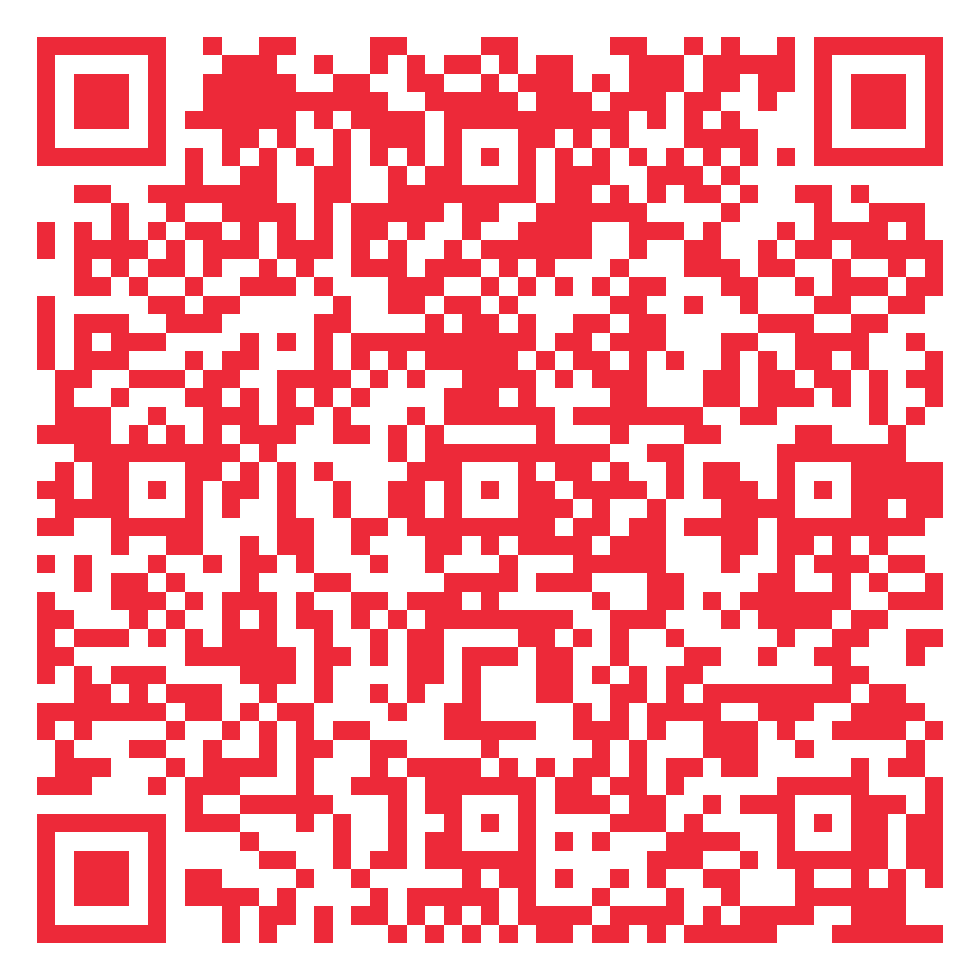

Escrever como se fala
Sabe dizê-lo, mas escrevê-lo é outra coisa: onde fica o ë, leva maiúscula, um e ou dois? O teclado responde-lhe enquanto escreve. Veja-o escrever e depois assuma o controlo: toque numa letra do teclado de teste, ou no microfone para lhe falar.
-
Adivinha a continuação
Depois de «nach eng», já sugere «Kéier». Tem em conta o que acabou de escrever: um toque, e a palavra seguinte fica escrita.
-
Põe os acentos no sítio
Escreva sem se preocupar com o ä, o ë e o é: sugere a palavra bem escrita. Se preferir escrevê-los, cada um tem a sua tecla.
-
Corrige as gralhas
Uma letra esquecida, uma letra a mais, uma tecla ao lado: a palavra certa aparece na mesma.
-
Conhece a ortografia
Os substantivos levam maiúscula, como manda a ortografia luxemburguesa, e as palavras longas escrevem-se com um toque. O teclado baseia-se no dicionário oficial da língua: não inventa nada, escolhe.
O microfone envia a sua voz para a Universidade do Luxemburgo, que a transcreve sem a guardar.
Fale luxemburguês, ele escreve
Deixe de procurar a ortografia: diga a sua frase e o teclado escreve-a por si, com maiúsculas e pontuação.
- Toque no microfone, à direita das sugestões.
- Fale normalmente. O texto vai aparecendo enquanto fala, e o microfone fecha-se sozinho quando para.
- Releia e envie.
O microfone faz parte do teclado: acompanha-o em todo o lado onde escreve.
A sua voz só sai do telemóvel quando toca no microfone, para o serviço de reconhecimento de voz da Universidade do Luxemburgo, que a transforma em texto sem a guardar. Por isso, precisa de uma ligação à Internet para ditar. O que escreve no teclado fica no seu telemóvel.


Como bónus
Cada palavra encontrada torna-se uma carta
Sete pequenos jogos fazem-no descobrir palavras novas. Cada palavra ganha entra na sua caderneta, numa carta aberta sobre um lugar do país, e volta por si até a fixar.
As suas perguntas
«O meu telemóvel sublinha as minhas palavras a vermelho.»
Ative o corretor do teclado: as suas palavras luxemburguesas passam a ser reconhecidas nas mensagens, nas notas e nos e-mails.
«Misturo com francês.»
Ative «Sugestões em francês» nas definições do teclado: «ech hunn eng réunion muer» escreve-se sem mudar de teclado.
«O Android mostra-me um aviso.»
Aparece para todos os teclados, sem exceção, no momento de os ativar. Este não envia nada do que escreve.
«Tenho um iPhone.»
Por agora, o teclado existe para Android. No iPhone ou no computador, experimente-o mais acima nesta página: toque numa letra do teclado de teste.
Na mesa
As cartas, em breve de verdade
O projeto está a preparar um jogo de cartas em luxemburguês, o Wuertduell, para jogar a dois à volta de uma mesa. Cada caixa opõe duas famílias de palavras, e um código na caixa vai juntar as suas cartas ao seu caderno na aplicação. Ainda nada está decidido: diga-nos se o jogo lhe agrada.

Instalar em três passos
- Instale a aplicação a partir do Google Play.
- Siga o guia: a aplicação mostra-lhe como ativar o teclado, passo a passo.
- Experimente-o logo ali e depois escreva a sua primeira mensagem.

Digitalize com o telemóvel